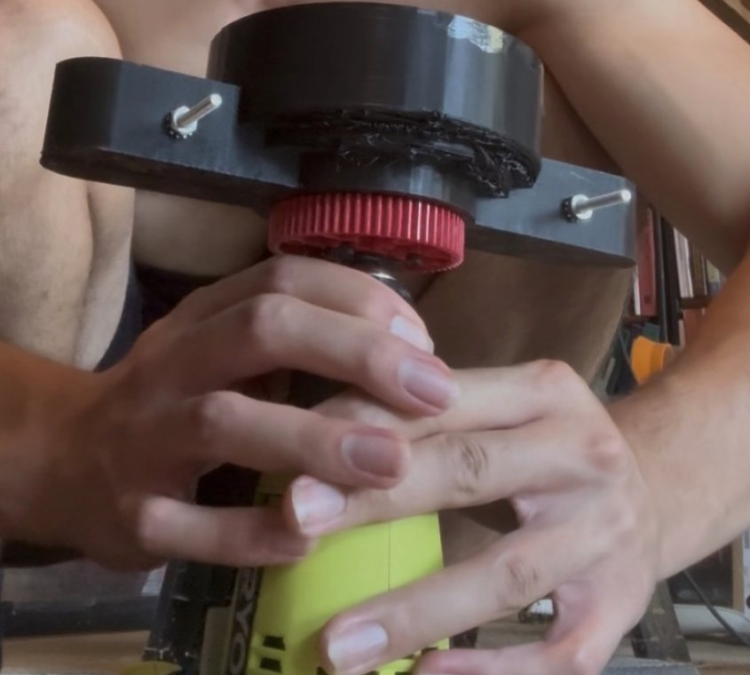

- Premise
- Electric arms are limited by heat, not magnetics. Remove the heat and continuous torque approaches peak torque.
- Approach
- Three pillars: liquid cooling, motors relocated to a static base, and a controller that tapers torque instead of tripping
- Built
- Hub-motor test article, spin-cure fixture, parametric clamshell CAD, rolling-joint linkage, two-DOF base layout
- Benchmark
- Published immersion cooling: 0.127 K/W vs. 1.31 K/W forced air — 10× better
- Status
- 18 sources reviewed · design complete · M1 baseline test not yet run
A note on maturity
This is a design-and-research project, not a results paper. Cited figures come from published work; SCATA's own figures are labelled as targets or predictions. No experimental results are claimed that have not been produced.
1 — The thermal ceiling
- Torque scales with current; heat scales with current squared. Double the torque, quadruple the heating. The motor will deliver it — it just can't survive doing so.
- Two hard limits. Winding insulation degrades with temperature. More permanently, rotor magnets have a Curie point (~80–150 °C) beyond which they demagnetise irreversibly — torque the motor never gets back.
- Arms have the worst thermal case of any robot. Holding a position draws maximum current at zero mechanical output. A legged robot converts current into locomotion; an arm holding a payload is a resistive heater shaped like a robot.
The 3.6-second figure is the one worth sitting with: an uncooled winding at 50 A crosses its limit in under four seconds. The same stator, immersion-cooled, settled at ~85 °C and never reached the limit at all. The motor was never the bottleneck. The heat was.
2 — Three pillars
I — Cooling
Cast epoxy seals a coolant path against the stator windings; a pumped loop carries heat to a radiator. Without it there's no headroom to manage.
II — Proximal actuation
Every motor mounts to the static base, distal joints driven by cable. Otherwise cooling a moving arm means flexing hoses or rotary fluid unions.
III — Thermal control
Live winding-temperature estimation feeds a limiter that tapers the torque ceiling. A hard cutoff wastes the headroom cooling just bought.
The dependency is circular in a productive way. Cooling needs the motors reachable by one loop — that's what proximal actuation provides. Because the motors are static and clustered, cooling, drive electronics, and power all live in one place, and the arm above the base plate becomes passive structure — light, cheap, independently replaceable.
3 — Pillar I: resin-sealed cooling
Resin does one of two completely different jobs, and confusing them is the fastest route to a design that underperforms:
In a jacket — thermal conductor
Heat must pass through the resin to reach coolant. Thickness directly costs performance.
In immersion — structural seal only
Coolant touches bare copper. Heat never crosses resin, so its conductivity stops mattering entirely.
The number that drives everything
Casting epoxy conducts at ~0.2 W/m·K — about a thousand times worse than aluminium. In a jacket, a resin wall thicker than ~2 mm in the heat path dominates the thermal resistance and squanders the entire benefit. This is the most common reason home-built cooling jackets fail to reproduce published results.
Benchmarks and staging
| Configuration | Thermal resistance | Relative |
|---|---|---|
| Forced air convection | 1.31 K/W | baseline |
| Liquid cooling jacket | 0.473 K/W | 2.8× better |
| Direct winding immersion | 0.127 K/W | 10× better |
- Flow rate dominates. 0.5 → 2.8 L/min cut thermal resistance 43.8% — bigger than most geometry changes. Size pumps generously.
- Phase change is irrelevant here. Letting coolant boil contributed 0.023 K/W. Not worth a two-phase design.
- Orientation only matters below ~1.5 L/min, where vapour pockets worsen results 18%. Above it the effect vanishes — important for an arm whose motors constantly reorient.
- Once immersed, the next limit was magnetic saturation — not temperature. Cooling moved the bottleneck out of the thermal domain entirely.
The constraint that splits the project in two
Immersion requires a dielectric fluid. Water must never touch bare windings. The borrowed PC water-cooling loop can serve a jacket, where resin and metal separate coolant from copper — it can never serve immersion. That's why the roadmap runs jacket → immersion: the jacket generation costs almost nothing and teaches the resin process, leak discipline, and instrumentation before any money goes into dielectric fluid.
4 — Build work

Before committing an expensive frameless motor and a $70 kit of thermally-conductive epoxy, the process needed proving. A free, expendable hoverboard hub motor became the test article. Its deliverable is a leak log, not a working motor.
Correction that saved the build
I had misread the published process. The epoxy does not fill the winding crevices to the brim. Spin-curing throws it radially outward, where it dams against the ring mould and fills only the slot openings at the tooth tips. The interior drains clear and stays hollow.
That hollow space is the coolant channel. Getting this wrong produces a working-looking part with no coolant path at all.
Two design rules I derived
Outrunners cannot be cooled. The outer bell spins, so there's no static surface to jacket and no way to seal against it. Redirected the build to a frameless inrunner (CubeMars RI50 KV100), sized inside the moteus current limits so the controller is never the constraint during thermal testing.
Spin-safe rule: no printed structure past the tooth-tip radius on any motor whose bell must turn. The seal must be mould-formed epoxy flush with the teeth; printed covers occupy the axial faces only. The 0.3 mm air gap leaves no room to negotiate — and the hoverboard piece taught this at zero cost.
5 — Pillar II: proximal actuation
Motors at the base means one short coolant loop serves everything — no tubing down a moving arm, no rotary unions, no hose flexed to failure. That is why most liquid-cooled robots are legs rather than arms.
Why bearings inside the pivots
- The default printed joint slides plastic on plastic. Layer lines are not a bearing surface: friction is high and inconsistent, the contact wears, and wear becomes backlash.
- For a cable-driven arm that's doubly costly — from the motor's point of view, joint friction is indistinguishable from load.
- Cable through the bearing, not past it. A cable changing direction over a fixed post drags and abrades; over a rolling element it rolls. Tension entering the joint largely survives it.
- On-axis routing decouples the joints. A cable through the rotation axis doesn't change effective length when that joint moves. Route it off-axis and every proximal joint writes itself into every distal joint's position — the kinematics stop being separable.
Transmission material: UHMWPE → steel
Published cyclic testing found Dyneema DM20 — the low-creep grade — elongated over 9% across 500 load cycles and was still creeping when the test ended. A tendon whose length is a slow function of load history corrupts position kinematics permanently, not transiently.
| Property | UHMWPE | Steel wire rope | Net |
|---|---|---|---|
| Viscoelastic creep | Continuous | None at working temp | Decisive |
| Temperature sensitivity | Weakens above ~70 °C | Indifferent | Frees tendon routing near the warm base |
| Termination | Slippery; needs splice | Swage — holds or fails visibly | Removes a test confounder |
| Axial stiffness | Lower | Higher | Better position fidelity |
| Tight-radius bending | Tolerant | Fatigue-limited, D/d ≥ 15–20 | The new constraint |
Switching to steel doesn't manage creep — it removes the mechanism entirely. The honest cost: creep has been exchanged for a bend-fatigue problem. A 10 mm rolling surface gives D/d = 10 at 1 mm cable (marginal) and 20 at 0.5 mm (comfortable). But fatigue is the better failure mode — steel announces it with visible broken wires, whereas creep is silent until the kinematics are already wrong.
6 — Pillar III: thermal-aware control
The default protection is a hard cutoff at 90 °C. It protects the motor and wastes the entire point of cooling — a cooled actuator that trips is no more useful than an uncooled one that trips. Soft limiting tapers the ceiling instead:
Two temperature estimates, and why disagreement is the feature
Once a stator is potted, the thermistor can't be moved — and it reads housing temperature, which lags the windings by tens of degrees during transients. So two estimates run in parallel: copper resistance (rises ~0.4%/°C; measures the copper itself) as primary, and a model fed by current, speed, and coolant ΔT as cross-check.
A safety signal falls out for free
If the two estimates diverge beyond threshold, that is itself a fault — and the most likely cause is exactly what the system most needs to catch: the pump has died or the loop air-locked, so coolant ΔT collapses toward zero while the windings keep heating.
| Controller | Job | Rate | Why split |
|---|---|---|---|
| moteus r4.11 | Motor drive + winding thermal protection | ~40 kHz | Built-in derate and fault logic — needs zero custom code and can't be broken by a host crash |
| ESP32 | Coolant supervision, pump, logging | 1 Hz | Catches the one thing moteus can't see: loss of flow is instant, the temperature rise it causes is not |
7 — Validation and roadmap
Six tests, in order. The first gates everything downstream.
- A/B thermal test. Same motor, same current, cooling off vs. on. If the cooled curve never flattens, heat removal is below heat input — that's a result, not a failed test.
- Heat balance. Q = ṁ·cp·ΔT against electrical I²R. A large gap means heat is escaping to air or the instrumentation is wrong.
- Thermal resistance. One number in °C/W per design — how the published work compares designs, and how SCATA measures against 0.473 / 0.127 K/W.
- Flow sweep. If flow rate changes nothing, the bottleneck is the resin-to-stator interface, not the coolant. Distinguishes a plumbing problem from a materials problem.
- Endurance and leak. 24 hours before electronics; re-test after ten heat/cool cycles, where expansion mismatch shows up.
- Torque hold time, cooled vs. uncooled. The number that actually matters for a manipulator.
Sensor resolution trap
A 100 W load at 2 L/min raises coolant temperature by only ~0.7 °C. DS18B20s are borderline. It is entirely possible to build a working cooling system and be unable to measure that it works.
| ID | Milestone | Status |
|---|---|---|
| M1 | Instrumented bench motor — one uncooled temperature-vs-time CSV | Gate |
| M2 | Resin jacket v1 + leak-validated loop → cooled A/B curves, Rth | Not started |
| M3 | Soft thermal limiter, band values set from M2 data | Not started |
| M4 | Single tendon-driven joint — backlash, friction budget, wrap wear | Not started |
| M5 | One joint that is cooled, proximally actuated, and soft-limited at once | Not started |
| M6 | SCATA arm v1 — 4–5 DOF on one loop, one controller | Not started |
M1 requires the cheapest hardware in the project and unblocks the most work, so everything is sequenced behind it. M4 needs no jacket, so the mechanical and thermal threads don't block each other until integration — a stall in one doesn't idle the other.
Top open items
- Wrap-diameter audit — measure D/d at every bearing the steel cable crosses. Highest priority, because it constrains joint geometry and retrofitting a larger radius into a printed assembly is a redesign, not an adjustment.
- Friction budget — input tension vs. output torque. Named as a cost of proximal actuation throughout, never yet quantified.
- Current-limit update latency over CAN — sets how fast the soft-limiter host loop must run.